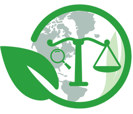
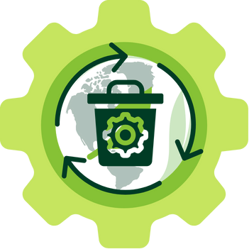
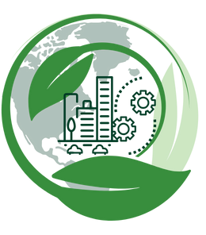

Somos el Grupo y Semillero de Investigación en Política, legislación y gestión ambiental POLYGESTA.
Estamos adscritos al Departamento de Geociencias y Medio Ambiente de la Facultad de Minas de la Universidad Nacional de Colombia- Sede Medellín, desde el 2003 y dirigido por el Profesor Carlos Alberto Zarate Yepes.
Nos dedicamos a la investigación de la actual política y legislación ambiental colombiana, el ordenamiento territorial y las problemáticas ambientales, sociales y económicas alrededor de estas temáticas, sus retrocesos y nuevos desarrollos en la perspectiva de formar propuestas alternativas que respondan a las realidades locales, nacionales e internacionales.
Nuestro enfoque estratégico
La política y legislación colombiana se encuentra en evolución permanentemente, incidiendo de manera directa en la relación sociedad-naturaleza y en el uso de los recursos naturales; con un equipo de profesionales y profesores de diferentes áreas del conocimiento, se contribuirá a dar respuesta a los retos que demanda esta evolución de la política y legislación ambiental nacional.
Tenemos una perspectiva interdisciplinar
Las problemáticas ambientales no se resuelven por medio de una sola disciplina, debido a su complejidad se debe trabajar en conjunto con otras áreas del conocimiento como la ingeniería, ciencias sociales, biología y ciencias jurídicas, para poder proponer soluciones viables y sostenibles. Es por esto que contamos con un equipo de profesionales y docentes de alto nivel pertenecientes a diferentes áreas del conocimiento.
Líneas de Investigación
Abordamos las diferentes problemáticas desde las siguientes líneas estrátegicas. Estas están dirigidas por docentes con un alto nivel de formación académica y calidad humana, además nuestras líneas estratégicas continuamente se entrecruzan; dando paso a la formación integral de estudiantes de pregrado y posgrado, así como también, a la formulación y ejecución de proyectos que impactan en la sociedad a través de la sinergia entre Academia, Estado, Sociedad y Empresas.
Política y legislación ambiental
Analizamos críticamente y, de ser el caso, proponemos ajustes a la política y legislación ambiental y minera de Colombia.
Adopción y apropiación de desarrollos tecnológicos generados y/o apropiados para el uso eficiente de los recursos naturales y la agrobiodiversidad, y el fortalecimiento de la agenda cero deforestaciones en la jurisdicción de CORANTIOQUIA
Derechos de Acceso a la Información y Participación en Asuntos Ambientales en Colombia: Análisis Conflicto socio-ambiental "Túnel de Oriente".

Gestión y evaluación ambiental
Aplicamos instrumentos de gestión y evaluación que nos permiten una mejor comprensión, prevención, manejo y mitigación de los impactos ambientales.
Adopción y apropiación de desarrollos tecnológicos generados y/o apropiados para el uso eficiente de los recursos naturales y la agrobiodiversidad, y el fortalecimiento de la agenda cero deforestaciones en la jurisdicción de CORANTIOQUIA
Desarrollo y aplicación de la metodología de huella hídrica y respuesta al índice de sostenibilidad por medio de análisis de economía circular en la Universidad Nacional de Colombia sede Medellín campus Robledo
Desarrollo de estrategias ambientales y culturales con comunidades locales para la disminución, manejo y disposición final de residuos plásticos mediante la conformación de una Red de Desarrollo Territorial para la Economía Circular, la Educación Ambiental y la Innovación Social de San Andrés de Tumaco

Sostenibilidad y economía circular
Implementamos herramientas metodológicas para evaluar la sostenibilidad ambiental, social y económica para la toma de decisiones.
Desarrollo y aplicación de la metodología de huella hídrica y respuesta al índice de sostenibilidad por medio de análisis de economía circular en la Universidad Nacional de Colombia sede Medellín campus Robledo.
Fortalecimiento de capacidades locales para el desarrollo productivo compatible con el clima, el aseguramiento de los medios de vida sostenible y evitar la crisis de seguridad alimentaria mediante procesos de innovación abierta y participativa en la Vereda el Pencal, municipio de Olaya.
Desarrollo de estrategias ambientales y culturales con comunidades locales para la disminución, manejo y disposición final de residuos plásticos mediante la conformación de una Red de Desarrollo Territorial para la Economía Circular, la Educación Ambiental y la Innovación Social de San Andrés de Tumaco.

Ordenamiento y gestión territorial
Analizamos las dinámicas territoriales, estudiando sus causas, consecuencias y la capacidad de las comunidades para dar respuesta a las mismas.
Desarrollo y aplicación de la metodología de huella hídrica y respuesta al índice de sostenibilidad por medio de análisis de economía circular en la Universidad Nacional de Colombia sede Medellín campus Robledo.